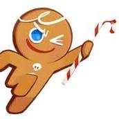

Overview
How is Cookie Land described?
Cookie Land(fake spinoff of Cookie Run Kingdom) is where all the best cookies live, and even new ones are created.
Cookie Land holds everyones favorites: Chocolate Chip, Sugar Cookie, Butterscotch,
and even those that people do not know.
In Cookie Land, everyone is composed of their different magical categories.
They are all different in types, but they all have to fight the evil cookie destroying witch.
Cookie Land needs all of their cookies to work together to prevent the cookie-civilians from being
overbaked, crumbled, or left out to stale. Using their many types of powers which include:
- MAGIC
- STRENGTH
- HEALING
- SUPPORT
- DEFENDING

Even delving further into Cookie Land, there's the 5 important figures. They have been known as the highest of all cookies. The one's who would come back when everything was turned to terror. Yet when they were sought from the cookie-civilians, they vanished.
Help save the cookie-civilians
Cookie Land needs extreme help!